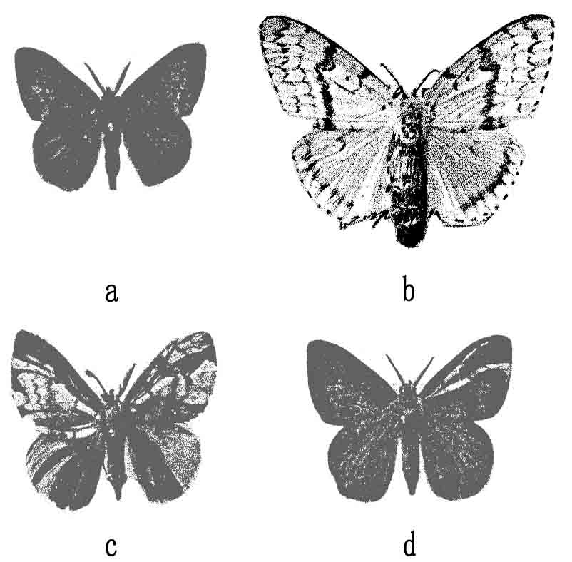

毒蛾里的性中型
Goldschmidt在毒蛾族间杂交产生性中型方面，进行了大规模的、极其有趣的重要实验。
普通欧洲毒蛾的雌性（图140a、b）同日本雄蛾杂交，子代雌雄各占一半。日本雌蛾同欧洲雄蛾交尾，子代的雄蛾正常，雌雄为性中型或者同雄性相似（图140c、d）。

图140 a.雄毒蛾Lymantria dispar；b.雌毒蛾；c与d表示两种性中型（仿Goldschmidt）
以后，Goldschmandt在欧洲毒蛾和几种日本毒蛾之间以及各族日本毒蛾之间，进行过一系列的精密实验。结果可分两系。一系由雌蛾最后变成雄蛾；另一系由雄蛾变化成雌蛾。前一种变化称为雌系性中型，后一种变化称为雄系性中型。Goldschmidt的长串实验从略，只把他的理论上的推论，尽量简短说明一下。
他所采用的雄性公式为MM，雌性公式为Mm；换句话说，就是WZ—ZZ公式。不过另外他又增加了另一组性别决定因子，最初称为FF，代表雌性。据说，雄性因子分离，和一般孟德尔式因子的行动相同，FF因子却不分离，并且只能借卵子传递。Goldschmidt假定FF因子位于胞质里面，虽然他以后倾向于把这些因子定位在W染色体上。
他对大型M（m无值）和FF各给一个不同的数值，由此构成一套理论，借以说明为什么在第一个谈到的杂交里，从某一个方向便产生相同数目的雌性和雄性，而从另一方向则产生性中型。
同样，他对于其他每一个杂交里的M、F各给一个适当的数值，因此能够对杂交结果作出了大致一贯的解释。
我认为Goldschmidt所拟的公式的特点，不在于他所给因子的数值，因为这些数值都是任意指定的，而在于他的下列主张：即杂交结果，只能用雌性基因在胞质内或者在W染色体上的假设，才能得到解释。在这一点上，他的主张和Bridges所研究的三倍型果蝇的情况不相同，在果蝇里，相反的势力分别存在于X染色体和常染色体的上面。
近来（1923）Goldschmidt报道了几个非常的例子，他相信这里有证据指明产生雌性的因子位于W染色体上面。有一个这样的例子涉及族间杂交，经过“不分离”作用，雌蛾从父方接受一条W染色体（在他的公式里是Y），从母方接受一条Z。这同Z、W的普通传递方式刚好相反。实验结果指出雌性因子随着W传递。逻辑上，这项证据好像是令人满意的。但是另一方面，Doncaster和Seiler两人也报道过几个非常的雌蛾有时也缺乏W染色体。这些雌蛾在任何方面都是一只正常的雌性，并且产生同样的后代（注：Abraxas的雌蛾和雄蛾都有58条染色体。Doncaster发现某个品系的雌蛾只有55条染色体。由此可知Abraxas雌蛾的染色体中多半包括了一条W染色体。一条染色体（料想是W）的缺失，在雌性性状上看不出有什么变化。缺少这条染色体的个体总是雌性，由此可知，这条染色体极可能真是一条性染色体，而不是一条常染色体。）。如果按照Goldschmidt的见解，雌性因子是在W染色体上，那么，这些雌蛾便不能够是雌性了。
在撇开Goldschmidt学说以前，应该提一下他用来说明性中型嵌合性质的一项极其有趣的意见。性中型由若干雄性部分和若干雌性部分拼凑而成。Goldschmidt推想，这是由于胚胎内决定雌雄两种部分的时间先后不同。换句话说，可以说成是族间杂种性中型的个体，在性因子的某种组合下，最初是一个雄性。所以最初出现的胚胎器官，都和雄性相同。在晚期发育中，雌性因子赶上并超过了产生雄性的因子，以致后期的胚胎和雌性相同。因此造成了这一类性中型的嵌合性质。
相反，另一型胚胎最初是在雌性因子影响下进行发育，最先形成的胚胎部分，都和雌性相同。在以后时间内，产生雄性的因子赶上并超过雌性倾向，于是发生了雄性器官。
Goldschmidt一般把基因看成是酶；虽然他有时承认这些酶可能是基因的产物，因而似乎是同我们关于基因性质的意见比较一致。在我们能够发现究竟是所有基因在任何时期都起作用，或者是全部或一部分基因仅仅在胚胎经过某一发育阶段时发生作用以前，在我能够发现这些事实以前，我们除推测外是无能为力的。